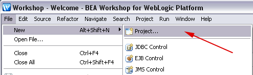
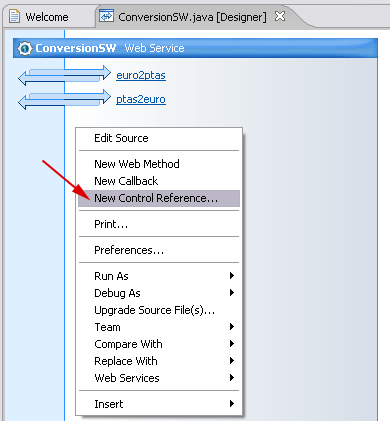
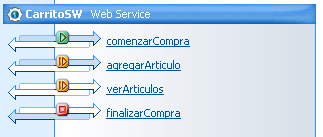

Creación de Servicios Web
Vamos a crear nuestros propios Servicios Web, que ofrecerán una serie de métodos a los que se podrá llamar mediante RPC desde cualquier lugar de Internet mediante protocolos estándar (mensajes SOAP).
Deberemos por lo tanto ser capaces de interpretar en nuestras aplicaciones los mensajes SOAP entrantes de petición para la invocación de un método. Posteriormente, invocaremos el método solicitado, y con el resultado que nos devuelva deberemos construir un mensaje SOAP de respuesta y devolvérselo al cliente.
Si tuviésemos que introducir nosotros el código para interpretar este mensaje de entrada, y generar manualmente el mensaje de respuesta, el desarrollo de Servicios Web sería una tarea altamente costosa.
Es más, si se forzase al programador a componer el mensaje SOAP manualmente cada vez que desarrolle un Servicio Web, es muy probable que cometa algún error y no respete exactamente el estándar SOAP. Esto sería un grave problema para la interoperabilidad de los Servicios Web, que es una de las características que perseguimos con esta tecnología.
Para evitar estos problemas, utilizaremos librerías que nos permitan leer o generar mensajes SOAP para la invocación de métodos remotos (RPC), como es el caso de la API JAX-RPC (o JAX-WS).
Además, para facilitar aún más la tarea de desarrollar Servicios Web, normalmente contaremos con herramientas que a partir de las clases que implementan nuestro servicio generen automáticamente todo el código necesario para leer el mensaje SOAP de entrada, invocar el método, escribir el mensaje SOAP de salida, y devolverlo al cliente.
Por lo tanto, nosotros deberemos centrarnos únicamente en la tarea de programar la funcionalidad que implementan nuestros servicios, olvidándonos del mecanismo de invocación de éstos.
JAX-RPC/WS es una especificación estándar de Sun Microsystems, pero no todos los servidores de aplicaciones utilizan esta librería para gestionar los Servicios Web. Por ejemplo, es el caso de Weblogic, que define su propia API para implementar los Servicios Web.
Arquitectura de los Servicios Web orientados a RPC
En las aplicaciones basadas en JAX-RPC/WS encontramos los siguientes elementos:
- Servicio: Elemento del servidor que implementa la funcionalidad de nuestro servicio. Normalmente utilizaremos una clase Java o un EJB.
- Cliente: Aplicación cliente que invoca los métodos del servicio remoto. La localización del servicio será transparente para el desarrollador de esta aplicación, que invocará los métodos del servicio de la misma forma que si éste fuese local.
- Stub: Capa en el cliente que implementa la interfaz del servicio, y utiliza internamente JAX-RPC/WS para construir los mensajes SOAP necesarios para invocar cada método de la interfaz, y para leer el mensaje de respuesta que recibamos. Este stub será el sustituto del servicio en el lado del cliente, la aplicación cliente ejecutará en él los métodos que ofrece el servicio, haciendo de esta forma transparente la localización del servicio para ella.
- Tie: Capa en el servidor que decodificará los mensajes SOAP entrantes con destino a nuestro servicio, y leerá de ellos el método que se quiere invocar y los parámetros de entrada que se proporcionan. Esta capa accederá al componente (clase Java o EJB) que implementa nuestro servicio, ejecutando dicho método en él. Una vez obtenido el resultado, generará un mensaje SOAP de respuesta y lo devolverá al cliente.
- JAX-RPC/WS: Librería que nos permitirá analizar y componer mensajes SOAP orientados a RPC, y enviarlos a través de protocolo HTTP. Además proporciona listeners y servlets que permanecerán a la escucha en el servidor para recibir mensajes entrantes de peticiones a los servicios. Una vez recibida una petición, utilizará la capa Tie del servicio correspondiente para invocarlo, proporcionándole a esta capa el mensaje SOAP entrante. A diferencia de las capas anteriores, que son específicas para un servicio concreto, la librería JAX-RPC/WS es genérica, nos servirá para cualquier servicio orientado a RPC.

Las únicas capas que debemos implementar nosotros son el Cliente y el Servicio. En la implementación de estos componentes el uso de la librería JAX-RPC/WS será totalmente transparente para nosotros. No hará falta que introduzcamos código JAX-RPC/WS dentro de ellas. En el servicio simplemente implementaremos los métodos que queremos que ofrezca nuestro servicio, como si se tratase de cualquier clase Java, y en el cliente podremos invocar los métodos de este servicio como si invocásemos directamente los métodos de la clase Java.
Las capas Stub y Tie, son capas construidas a medida para la interfaz de nuestro servicio. Estás son las capas que utilizarán JAX-RPC/WS para generar y leer los mensajes SOAP que vamos a utilizar para invocar el servicio, y devolver la respuesta al cliente. Generarán o serán capaces de leer los mensajes apropiados para el caso concreto de los métodos que definimos en nuestro servicio, por lo que deberemos generar estas capas para cada servicio que desarrollemos. Afortunadamente, normalmente contaremos con herramientas que generen de forma automática estas capas a partir de la interfaz de nuestro servicio, por lo que no será necesario que el desarrollador de servicios trate directamente con JAX-RPC/WS en ningún momento.
Tipos de datos compatibles
Vamos a ver los tipos de datos que podemos utilizar cuando trabajamos con JAX-RPC/WS como tipo de los parámetros y del valor devuelto por los métodos de nuestro servicio.
Podremos utilizar cualquiera de los tipos básicos de Java:
boolean byte double float int long short char
Además, también podremos utilizar cualquiera de los wrappers de estos tipos básicos:
java.lang.Boolean java.lang.Byte java.lang.Double java.lang.Float java.lang.Integer java.lang.Long java.lang.Short java.lang.Character
Las siguientes clases de Java también son aceptadas como tipos válidos por JAX-RPC/WS:
java.lang.String java.math.BigDecimal java.math.BigInteger java.util.Calendar java.util.Date
Podremos utilizar también gran parte de las clases pertenecientes al marco de colecciones de Java:
Listas: List ArrayList LinkedList Stack Vector Mapas: Map HashMap Hashtable Properties TreeMap Conjuntos: Set HashSet TreeSet
Además de estos datos, se permitirá el uso de arrays, tanto unidimensionales como multidimensionales, cuyos elementos podrán ser de cualquiera de los tipos admitidos.
Las clases desarrolladas por nosotros también podrán ser usadas si cumplen ciertas condiciones:
- Debe tener un constructor público sin parámetros.
- No debe implementar la interfaz RMI javax.rmi.Remote.
- Todos sus campos deben ser tipos soportados por JAX-RPC/WS. Estos campos pueden
ser públicos, protegidos o privados. Para que JAX-RPC/WS sea capaz de
leer o establecer los valores de estos campos deberá cumplirse que:
- Los campos públicos no deben ser ni final ni transient.
- Los campos no públicos deben tener sus correspondientes métodos get* y set*.
Si nuestros tipos de datos no cumplen estas características, o bien estamos trabajando con herramientas que no soportan estos tipos, deberemos construir manualmente serializadores y deserializadores para nuestras clases. Su función será realizar la conversión entre nuestra clase Java y su correspondiente formato como documento XML.
Implementación del servicio: Fichero JWS
Para implementar los servicios deberemos crear una clase JWS, que consiste en una clase Java con anotaciones de la API Web Services Metadata for the Java Platform (JSR-181). Parte de los métodos de esta clase se ofrecerán como operaciones del servicio web. Para poder ofrecer los métodos de esta clase como servicio web deberemos generar las capas vistas anteriormente. Para ello contaremos con diferentes herramientas, que dependerán de la plataforma de desarrollo que utilizamos. Posteriormente veremos tanto las herramientas incluidas en JDK 1.6 como las herramientas de Weblogic.
La API Web Services Metadata for the Java Platform viene a estandarizar la forma en la que se definen los Servicios Web en Java. Anteriormente, cada plataforma definía su propia forma de crear servicios web, por lo que, por ejemplo, un servicio web desarrollado con el JWSDP de Sun no podía desplegarse directamente en Weblogic. Además, el fichero JWS contendrá toda la información necesaria para generar el servicio, por lo que no hará falta tener la información sobre el servicio dispersa en diferentes ficheros como ocurría antes.
Para crear la clase JWS que implemente el servicio deberemos crear una clase con un constructor sin parámetros (si no se crea ningún constructor por defecto la clase tendrá un constructor sin parámetros vacío), y con al menos la anotación @WebService. Los métodos públicos que definamos en esta clase serán por defecto las operaciones que ofrecerá el servicio aunque, como veremos más adelante, también podemos especificar mediante anotaciones los métodos que queremos que se publiquen como servicio. Por ejemplo, podemos implementar nuestro servicio como:
package es.ua.jtech.servcweb.conversion;
import javax.jws.WebService;
@WebService
public class ConversionSW {
public int euro2ptas(double euro) {
return (int) (euro * 166.386);
}
public double ptas2euro(int ptas) {
return ((double) ptas) / 166.386;
}
}
Con esto habremos implementado la funcionalidad del servicio como una clase Java ordinaria, sin necesitar tener conocimientos de ninguna librería adicional.
Anotaciones
Podemos especificar la forma en la que se crea el servicio mediante diferentes anotaciones. Las principales anotaciones disponibles son:
| @WebService | Indica que la clase define un servicio web. Se pueden especificar como parámetros los nombres del servicio, del puerto, y de su espacio de nombres, que figurarán en el documento WSDL del servicio:
@WebService(name="ConversionPortType",
serviceName="ConversionService",
targetNamespace="http://jtech.ua.es")
|
|
| @SOAPBinding | Permite especificar el estilo y la codificación de los mensajes SOAP utilizados para invocar el servicio. Por ejemplo:
@SOAPBinding(style=SOAPBinding.Style.DOCUMENT,
use=SOAPBinding.Use.LITERAL,
parameterStyle=
SOAPBinding.ParameterStyle.WRAPPED)
|
|
| @WebMethod | Indica que un determinado método debe ser publicado como operación del servicio. Si no se indica para ningún método, se considerará que deben ser publicados todos los métodos públicos. Si no, sólo se publicarán los métodos indicados. Además, de forma opcional se puede indicar como parámetro el nombre con el que queramos que aparezca la operación en el documento WSDL:
@WebMethod(operationName="eurosAptas")
public int euro2ptas(double euros) {
...
}
|
|
| @Oneway | Indica que la llamada a la operación no debe esperar ninguna respuesta. Esto sólo lo podremos hacer con métodos que devuelvan void. Por ejemplo:
@Oneway()
@WebMethod()
public void publicarMensaje(String mensaje) {
...
}
|
|
| @WebParam | Permite indicar el nombre que recibirán los parámetros en el fichero WSDL:
@WebMethod(operationName="eurosAptas")
public int euro2ptas(
@WebParam(name="CantidadEuros",
targetNamespace="http://jtech.ua.es")
double euros) {
...
}
|
|
| @WebResult | Permite indicar el nombre que recibirá el mensaje de respuesta en el fichero WSDL:
@WebMethod(operationName="eurosAptas")
@WebResult(name="ResultadoPtas",
targetNamespace="http://jtech.ua.es")
public int euro2ptas(double euros) {
...
}
|
|
Estilo y codificación del servicio
Hemos visto que mediante la anotación @SOAPBinding podemos cambiar el estilo y la codificación del servicio. Los posibles estilos son:
- SOAPBinding.Style.RPC: Se utilizan mensajes SOAP orientados a RPC, en los que se codifican en XML las llamadas a métodos remotos.
- SOAPBinding.Style.DOCUMENT: Se utilizan mensajes SOAP orientados al documento. Dado que en estos mensajes se puede incluir cualquier tipo de documento XML, también se pueden utilizar para invocar operaciones de servicios.
Podemos especificar también la codificación:
- SOAPBinding.Use.LITERAL: Esta es la única codificación aceptada en el WS-I Basic Profile (BP), que da soporte a los servicios de tipo document/literal y RPC/literal.
- SOAPBinding.Use.ENCODED: Se trata de una codificación que permite representar una mayor variedad de estructuras de datos que la anterior, pero está desaprobada por el BP por ser la causa de gran cantidad de incompatibilidades entre servicios. De hecho JAX-WS es incompatible con los servicios de este tipo. Esta codificación se suele utilizar con servicios de tipo RPC, dando lugar al tipo RPC/encoded.
En el caso de los servicios de tipo document/literal, también podemos especificar la forma en la que se representan los tipos de datos de los parámetros de las operaciones:
- SOAPBinding.ParameterStyle.BARE: Los parámetros se pasan directamente.
- SOAPBinding.ParameterStyle.WRAPPED: Los parámetros se pasan envueltos en tipos de datos complejos.
Por defecto los servicios serán del tipo document/literal/wrapped.
Tratamiento de errores
Cuando se produzca un error en nuestro servicio, podemos lanzar una excepción de tipo SOAPFaultException para notificar al cliente del error producido. Al lanzar esta excepción se devolverá al cliente un mensaje SOAP Fault. Podemos lanzar esta excepción de la siguiente forma:
package es.ua.jtech.servcweb.conversion;
import javax.jws.WebMethod;
import javax.jws.WebService;
import javax.xml.namespace.QName;
import javax.xml.rpc.soap.SOAPFaultException;
import javax.xml.soap.Detail;
import javax.xml.soap.SOAPException;
import javax.xml.soap.SOAPFactory;
@WebService
public class ConversionSW {
@WebMethod
public int euro2ptas(double euro) {
if(euro<0) {
lanzarExcepcion("La cantidad de euros debe ser positiva");
}
return (int) (euro * 166.386);
}
@WebMethod
public double ptas2euro(int ptas) {
if(ptas<0) {
lanzarExcepcion("La cantidad de ptas debe ser positiva");
}
return ((double) ptas) / 166.386;
}
private void lanzarExcepcion(String mensaje) {
Detail detail = null;
try {
SOAPFactory soapFactory = SOAPFactory.newInstance();
detail = soapFactory.createDetail();
} catch (SOAPException e) { }
QName faultCode = null;
String faultString = mensaje;
String faultActor = "Servicio Conversion";
throw new SOAPFaultException(faultCode, faultString,
faultActor, detail);
}
}
Compilación del fichero JWS
Para generar y desplegar el servicio no basta con compilar la clase JWS, sino que deberemos utilizar herramientas específicas para generar las capas necesarias para ofrecer los métodos de la clase como servicio web. Veremos tanto las herramientas disponibles en JDK a partir de la versión 1.6, como las herramientas ofrecidas por la plataforma Weblogic. Posteriormente veremos como crear los servicios web de forma visual con BEA Workshop.
Compilación del servicio con JDK 1.6
Igual que en el caso de los clientes de servicios web, a partir de la versión 1.6 de JDK se incluyen herramientas para generar servicios web. Concretamente la herramienta que se utilizará para generar el servicio es wsgen, que al igual que wsimport se podrá utilizar tanto en línea de comando como en forma de tarea de ant.
Lo primero que deberemos hacer es compilar la clase que implementa el servicio (fichero JWS) al igual que cualquier otra clase Java, con la herramienta javac. Una vez hecho esto, generaremos el servicio con wsgen a partir de la clase compilada. Utilizaremos wsgen de la siguiente forma:
wsgen -cp <classpath> -s <src.dir> -d <dest.dir>
<nombre.clase.servicio>
La clase que implementa el servicio (<nombre.clase.servicio>) se especificará mediante su nombre completo, es decir, incluyendo el nombre del paquete al que pertenece. Podemos proporcionar otros parámetros para indicar la forma en la que se deben generar las clases, como el directorio donde queremos que guarde los fuentes de las clases generadas (<src.dir>), el directorio donde guardará estas clases compiladas (<dest.dir>), y el classpath, en el que deberá encontrarse la clase especificada.
En el caso concreto del servicio ConversionSW definido anteriormente, podríamos generar las clases necesarias (después de haber compilado la clase ConversionSW) de la siguiente forma:
wsgen -cp bin -s src -d bin
es.ua.jtech.servcweb.conversion.ConversionSW
También podríamos utilizar la versión de ant de esta herramienta. Para ello deberemos declarar previamente la tarea wsgen (teniendo la librería jaxws-tools.jar dentro del CLASSPATH de ant):
<taskdef name="wsgen" classname="com.sun.tools.ws.ant.WsGen"/>
Una vez declarada se podrá utilizar de la siguiente forma:
<wsgen classpath="${bin.home}"
sei="${service.class.name}"
sourcedestdir="${src.home}"
destdir="${bin.home}" />
Con esto habremos creado las clases necesarias para publicar el servicio. Con JDK 1.6 no será necesario contar con un servidor de aplicaciones para publicar este servicio, sino que lo podremos publicar desde cualquier aplicación Java. Podemos publicar el servicio de la siguiente forma:
package es.ua.jtech.servcweb;
import javax.xml.ws.Endpoint;
import es.ua.jtech.servcweb.conversion.ConversionSW;
public class Servicio {
public static void main(String[] args) {
Endpoint.publish(
"http://localhost:8080/ServicioWeb/Conversion",
new ConversionSW());
}
}
Cuando ejecutemos la aplicación, podremos acceder al WSDL del servicio a través de cualquier navegador en la siguiente dirección:
http://localhost:8080/ServicioWeb/Conversion?WSDL
Compilación del servicio con Weblogic
Weblogic nos proporciona herramientas para generar las capas necesarias para construir y desplegar nuestros Servicios Web.
Una vez escrito el fichero JWS, deberemos compilar esta clase mediante la herramienta jwsc de Weblogic. Podemos utilizar esta herramienta como tarea de ant. Para ello primero deberemos introducir la librería weblogic.jar (que se encuentra en el directorio WL_HOME/server/lib) en el CLASSPATH de ant. Una vez hecho esto, declararemos la tarea jwsc en nuestro buildfile:
<taskdef name="jwsc"
classname="weblogic.wsee.tools.anttasks.JwscTask"/>
Utilizaremos esta tarea para compilar el servicio de la siguiente forma:
<jwsc srcdir="${src.home}" destdir="${ear.home}">
<jws file="${jws.file}"/>
</jwsc>
Donde:
- srcdir es el directorio en el que se encuentran los fuentes de nuestro servicio (el fichero JWS).
- destdir es el directorio en el que se generará el EAR con el servicio, listo para ser desplegado en Weblogic, bien mediante la consola de administración o mediante la tarea wldeploy.
- file es el nombre del fichero JWS, del que se debe indicar la ruta relativa al directorio en el que está dicho fichero respecto al directorio de fuentes especificado (por ejemplo es/ua/jtech/servcweb/conversion/ConversionSW.java).
Una vez ejecutemos esta tarea, si no se producen errores de compilación tendremos el servicio generado en destdir, con la estructura completa de la aplicación EAR que puede desplegarse directamente en Weblogic. Si nuestro servicio necesita clases (o ficheros) adicionales para poder ejecutarse, éstas se pueden incluir en el subdirectorio APP-INF/classes del directorio donde se ha generado el EAR. El contenido de este directorio será compartido por todos los componentes de la aplicación que se despliega con el EAR.
Una vez desplegado, podremos acceder al documento WSDL que describe el servicio en la siguiente dirección:
http://localhost:7001/<nombre del servicio>/<nombre del servicio>?WSDL
En el caso concreto de nuestro ejemplo esta dirección sería:
http://localhost:7001/Conversion/Conversion?WSDL
Crear un servicio partiendo de un documento WSDL
En ocasiones nos puede interesar crear un servicio a partir de un documento WSDL, para forzarlo a que cumpla una determinada interfaz y así asegurarnos la compatibilidad del servicio. Weblogic incorpora una tarea que nos permite hacer esto, generando el fichero JWS y los tipos de datos Java necesarios a partir de un documento WSDL. Esta tarea es wsdlc.
Para utilizar la tarea de ant wsdlc, primero deberemos declararla en nuestro buildfile:
<taskdef name="wsdlc"
classname="weblogic.wsee.tools.anttasks.WsdlcTask"/>
Una vez declarada, podremos generar los ficheros JWS para implementar nuestro servicio de la siguiente forma:
<wsdlc srcWsdl="${wsdl}"
destJwsDir="${lib.home}"
destImplDir="${src.home}"
packageName="${package.name}" />
Donde:
- srcWsdl: Indica el documento WSDL a partir del cual se generará el servicio.
- destJwsDir: Indicar el directorio en el cual se generará la librería con los tipos de datos necesarios para invocar el servicio. Esta librería se generará en un fichero JAR con nombre ${wsdl}_wsdl.jar.
- destImplDir: Será el directorio donde se generará la plantilla del fichero JWS, que tomará el nombre PortTypeImpl.java (donde PortType es el nombre del tipo de puerto que aparece en el documento WSDL). Este fichero será el que deberemos modificar para implementar en él el servicio.
- packageName: Nombre del paquete en el que se generarán las clases anteriores. Si no se especifica este dato, se obtendrá un nombre de paquete a partir del espacio de nombres especificado en el documento WSDL.
Una vez ejecutada esta tarea, deberemos incluir el código necesario en el fichero JWS generado para implementar las operaciones del servicio. Cuando esté implementado, utilizaremos la tarea jwsc para generar el servicio, igual que en los casos anteriores.
Crear un servicio que invoque otro servicio
Cuando queramos crear un servicio web que invoque otro servicio web será necesario que nuestro servicio contenga el stub que da acceso al servicio web que vamos a utilizar. Para hacer esto podemos anidar una etiqueta clientgen (como la vista en la sección anterior para crear los clientes) dentro de la etiqueta jws que define nuestro servicio:
<jwsc srcdir="${src.home}" destdir="${ear.home}">
<jws file="${jws.file}">
<clientgen wsdl="${wsdl.url}" packageName="${pkg.name}" />
</jws>
</jwsc>
Probar los servicios
Una vez desplegados los servicios, podremos probarlos mediante un cliente web genérico del que disponemos en Weblogic (Weblogic Test Client). Podemos acceder a este cliente en la siguiente dirección:
http://localhost:7001/wls_utc
Aquí deberemos introducir la dirección del documento WSDL del servicio a probar. Una vez hecho esto nos aparecerá la lista de operaciones que ofrece y una serie de formularios HTML para probarlas.
Creación de servicios web con BEA Workshop
A parte de las herramientas vistas anteriormente, normalmente los diferentes IDEs (BEA Workshop, Eclipse, Netbeans, etc) nos permiten crear servicios web de forma sencilla, mediante asistentes y de forma visual en muchos casos. Vamos a ver a continuación cómo crear servicios web paso a paso utilizando BEA Workshop.
Los servicios web creados con BEA Workshop utilizarán en muchos casos una serie de librerías específicas (como es el caso de los controles Beehive) de las que este entorno se sirve para poder crear los servicios de forma visual. Para que estos proyectos funcionen correctamente en Weblogic, deberemos crear un dominio que incluya dichas librerías. Para ello, en el asistente de creación del dominio deberemos marcar la casilla Workshop for WebLogic Platform:

Vamos a seguir el ejemplo del servicio web de conversión (de euros a ptas y viceversa) visto en los puntos anteriores para ilustrar el procedimiento que utilizaremos en BEA Workshop para crear un servicio web. Seguiremos los siguiente pasos:
- Lo primero que haremos será crear un nuevo proyecto en BEA Workshop. Normalmente este proyecto será incluido
en el EAR de nuestra aplicación, aunque para el caso de nuestro ejemplo lo crearemos como proyecto independiente.

- Como tipo de proyecto seleccionaremos Web Service Project, dentro del apartado Web Services.
- Daremos un nombre al proyecto y dejaremos el resto de opciones con sus valores por defecto.
- Deberemos crear en el directorio de fuentes el paquete que contendrá la implementación de nuestro servicio,
y sobre él crear un nuevo WebLogic Web Service.
- Damos nombre al servicio web (este será el nombre de la clase que implementará el servicio).
- Veremos las operaciones del servicio de forma visual. Por defecto crea una operación hello.
- Podemos modificar estas operaciones pulsando sobre ellas con el botón derecho del ratón. Pulsamos sobre la
operación hello y seleccionamos Edit signature para cambiar la interfaz de la operación.
En lugar de void hello() pondremos int euro2ptas(double euros).
- Al cambiar la interfaz de la operación aparecerá un error, porque espera que devuelva un valor int
y por el momento no hemos implementado dicha función. Pincharemos con el botón derecho sobre la operación y
seleccionaremos Edit source para modificar el código fuente y añadir el comportamiento correspondiente.
- Introducimos el código fuente dentro de la función.
- Vamos a añadir una nueva operación al servicio, para ello volvemos a la vista de diseño y pulsamos con el botón
derecho sobre el fondo. Seleccionamos la opción New Web Method y creamos una nueva operación
double ptas2euro(int ptas). Repetimos los pasos 8 y 9 para introducir el código fuente de esta nueva
operación.

- Podemos probar las operaciones de nuestro servicio pulsando sobre ellas (o sobre el propio servicio) con
el botón derecho del ratón y seleccionando Run As > Run on Server. Esto pondrá en marcha el servidor
WebLogic y desplegará en él los servicios implementados (deberemos utilizar un dominio preparado para Workshop).
- Una vez iniciado el servidor y desplegados los servicios automáticamente se abrirá el cliente de prueba
de WebLogic (Weblogic Test Client) visto anteriormente para probar dichos servicios. En él podremos
especificar los parámetros que tomarán las operaciones e invocarlas. Veremos el resultado obtenido y los mensajes
SOAP de petición y respuesta utilizados para la invocación.
Invocación de servicios desde dentro de otro servicio
Si queremos invocar un servicio desde dentro de otro servicio podríamos crear un stub como vimos en el tema anterior e incluir dicha librería dentro de nuestro proyecto de servicio web, o en un proyecto de utilidad asociado a nuestro proyecto. De esta misma forma también podríamos invocar servicios web desde dentro de otros componentes como por ejemplo aplicaciones web o EJBs.
Sin embargo, en BEA Workshop existe la posibilidad de crear estos clientes de servicios de forma visual en forma de controles Beehive, concretamente se utilizarán controles para acceso a servicios (service controls). Estos controles podrán ser utilizados desde dentro de otros servicios web o en flujos de páginas de aplicaciones web (Page Flows).
A continuación veremos como crear paso a paso un servicio web que invoque otro servicio de forma visual mediante BEA Workshop. Para este ejemplo ampliaremos el servicio web de conversión monetaria visto en el punto anterior, añadiendo operaciones para convertir entre euros y dólares. Dado que la tasa de cambio entre estas dos monedas varía con el tiempo, será necesario recurrir a un servicio web externo para obtener la tasa de cambio actual entre dichas monedas.
Partiendo del servicio web del caso anterior, realizaremos los siguientes pasos para añadir las nuevas operaciones y los controles para acceder al servicio web de cambio monetario:
- Lo primero que deberemos hacer es crear un nuevo paquete en el que crearemos los
controles que actuaran como cliente de los servicios web externos que vamos a invocar
(en nuestro caso utilizaremos el servicio CurrencyExchangeService). Dentro de
este paquete copiaremos el documento WSDL que define dicho servicio, y crearemos un
nuevo Service Control a partir de dicha especificación.
- En el asistente para crear el Service Control seleccionaremos el documento
WSDL que hemos añadido al proyecto en el paso anterior.
- A continuación nos pide que indiquemos el nombre de la clase correspondiente al
control. Podemos dejar el nombre que aparece por defecto, que se creará dentro del
mismo paquete en el que tenemos el documento WSDL.
- Una vez creado el control, podemos añadirlo dentro de nuestro servicio. Para ello
iremos a la vista de diseño del servicio de conversión, pulsaremos sobre el fondo con
el botón derecho del ratón y seleccionaremos la opción New Control Reference ....

- En la ventana de selección de controles seleccionaremos el control creado anteriormente
que nos dará acceso del servicio CurrencyExchangeService.
- A la derecha de la vista de diseño del servicio aparecerá el control que acabamos
de añadir con todos los métodos que ofrece. Entre estos métodos estarán las operaciones
del servicio al que represente. En este caso, la operación que ofrece el servicio es
getRate. Pulsaremos sobre el botón derecho sobre esta operación y
seleccionaremos la opción Generate Delegate Method para que genere en nuestro
servicio un método que invoque dicha operación en el servicio remoto.
- Con esto se añadirá a la interfaz de nuestro servicio una nueva operación
getRate que únicamente llamará a esa misma operación en el servicio
remoto y nos devolverá el resultado obtenido. Podemos fijarnos en el código fuente
de dicha función para ver cómo se invoca el servicio remoto a través del control.
- Añadiremos las operaciones euro2dolar y dolar2euro de
la misma forma que añadimos las operaciones euro2ptas y ptas2euro.
Dentro del código de estas operaciones invocaremos el servicio remoto para obtener la
tasa de cambio entre dólares y euros y así poder convertir de forma adecuada la cantidad
que se nos proporcione. El código completo del servicio quedará como se muestra a
continuación:
package es.ua.jtech.servcweb.conversion; import javax.jws.*; import org.apache.beehive.controls.api.bean.Control; import es.ua.jtech.servcweb.controles.CurrencyExchangeServiceControl; @WebService public class ConversionSW { @Control private CurrencyExchangeServiceControl currencyExchangeServiceControl; @WebMethod public int euro2ptas(double euros) { return (int)(euros*166.386); } @WebMethod public double ptas2euro(int ptas) { return ptas/166.386; } @WebMethod public float getRate(java.lang.String country1_arg, java.lang.String country2_arg) { return currencyExchangeServiceControl.getRate( country1_arg, country2_arg); } @WebMethod public double dolar2euro(double dolar) { return currencyExchangeServiceControl.getRate( "usa", "euro") * dolar; } @WebMethod public double euro2dolar(double euros) { return currencyExchangeServiceControl.getRate( "euro", "usa") * euros; } }
Los controles se pueden importar de forma visual desde Workshop tanto dentro de servicios web como en flujos de páginas, pero no en otro tipo de componentes. Si queremos utilizar estos controles desde otros componentes, deberemos instanciarlos manualmente.
CurrencyExchangeControlServiceBean bean =
Controls.instantiate(CurrencyExchangeControlServiceBean.class,
null,
ControlThreadContext.getContext(), null);
Operaciones asíncronas
Hasta el momento hemos visto servicios en los que al invocar una operación obtenemos un resultado inmediato (debido al mecanismo síncrono petición-respuesta del protocolo HTTP sobre el que funcionan dichos servicios). Sin embargo, en un proceso de negocio podemos encontrar operaciones que no sean inmediatas, o incluso que necesiten la supervisión de una persona para poder completarse. Por ejemplo, en el caso de petición de un préstamo normalmente deberá haber una persona que lo apruebe o lo deniegue, y no se dejará que una máquina tome dicha decisión. En estos casos no se podrá utilizar este mecanismo síncrono, ya que la respuesta podría tardar bastante tiempo en llegar. Para solucionar este problema contamos con la posibilidad de definir operaciones asíncronas en nuestros servicios.
La operaciones asíncronas (oneway) devolverán el control inmediatamente al llamador, sin producir ningún resultado. El resultado se proporcionará posteriormente mediante un callback. Podemos hacer una analogía con un servicio de información telefónica, en el que si llamamos solicitando un número y no tienen la información, para no hacernos esperar demasiado tiempo al teléfono pueden colgar, buscarla, y devolvernos la llamada (callback) cuando la encuentren.
Vamos a ver como ejemplo un servicio web sencillo, en el que programamos la recepción de un mensaje tras un determinado número de segundos. Seguiremos los siguientes pasos:
- Creamos un servicio web con una operación void programa(String mensaje,
int segundos). Pulsamos con el botón derecho sobre dicha operación y seleccionamos
Oneway para marcarla como operación asíncrona, ya que programará la recepción
del mensaje pero no devolverá ningún resultado.
- Veremos que la operación aparece ahora con una única flecha, indicando que es
sólo de entrada. Deberemos añadir el callback para devolver el resultado
cuando esté disponible. Para ello pulsamos con el botón derecho sobre el fondo
y seleccionamos New Callback.
- El callback tendrá como interfaz void enviaRespuesta(String mensaje). En
este caso, los datos que se pasan como parámetro son los que recibirá el cliente
cuando se devuelva la llamada.
- Haremos que la operación programa programe un temporizador, para que
transcurridos los segundos indicados invoque al callback enviaRespuesta
para devolver el mensaje especificado. El código fuente completo del servicio quedará
como se muestra a continuación.
package es.ua.jtech.servcweb.temporizador; import java.util.Timer; import java.util.TimerTask; import javax.jws.*; import weblogic.jws.CallbackService; import weblogic.wsee.jws.CallbackInterface; import weblogic.jws.Callback; @WebService public class TemporizadorSW { @Callback private CallbackSvc callback; @WebMethod @Oneway() public void programa(String mensaje, int segundos) { TimerTask tarea = new Temporizador(mensaje); Timer timer = new Timer(); timer.schedule(tarea, segundos * 1000); } @CallbackService public interface CallbackSvc extends CallbackInterface { @WebMethod public void enviaRespuesta(String mensaje); } class Temporizador extends TimerTask { String mensaje; public Temporizador(String mensaje) { this.mensaje = mensaje; } public void run() { callback.enviaRespuesta(mensaje); } } } - Podremos probar este servicio directamente en WebLogic Test Client. En
principio tendremos únicamente disponible la operación programa. La
invocaremos para programar la recepción de un mensaje en un determinado número de
segundos.
- Si tras esperar el número de segundos indicado pulsamos sobre Show Operations,
veremos que junto a la operación invocada anteriormente aparece el callback
que ya está disponible. Pulsando sobre el enlace al callback veremos
el resultado que nos ha devuelto.
- También podremos crear un cliente que invoque el servicio asíncrono que acabamos
de crear. Para ello crearemos un nuevo servicio web y añadiremos un control para
acceder al servicio TemporizadorSW definido en los pasos anteriores.
Crearemos un método delegado para la operación programa, como hemos
visto anteriormente, y un manejador de eventos para recibir el callback del
servicio. Para esto último, pulsaremos con el botón derecho sobre el callback
enviaRespuesta del control, y seleccionamos la opción Create
Event Handler.
- Añadiremos una nueva operación getUltimoMensaje que nos devolverá
el último mensaje que nuestro servicio haya recibido del manejador de eventos.
- El manejador de eventos guardará el mensaje recibido en un campo estático de la clase,
y la operación getUltimoMensaje nos devolverá el valor de dicho campo. El código
fuente completo de este cliente quedará como se muestra a continuación.
package es.ua.jtech.servcweb.temporizador; import javax.jws.*; import org.apache.beehive.controls.api.bean.Control; import es.ua.jtech.servcweb.controles.TemporizadorSWServiceControl; import org.apache.beehive.controls.api.events.EventHandler; @WebService public class ClienteTemporizadorSW { static String mensaje = null; @Control private TemporizadorSWServiceControl temporizadorSWServiceControl; @WebMethod public void programa(java.lang.String mensaje_arg, int segundos_arg) { temporizadorSWServiceControl.programa(mensaje_arg, segundos_arg); } @WebMethod public String getUltimoMensaje() { if(mensaje==null) { return "No se ha recibido ningun mensaje"; } else { return mensaje; } } @EventHandler(field = "temporizadorSWServiceControl", eventSet = TemporizadorSWServiceControl.Callback.class, eventName = "enviaRespuesta") protected void temporizadorSWServiceControl_Callback_enviaRespuesta( java.lang.String mensaje_arg) { mensaje = mensaje_arg; } }
Servicios web conversacionales
Un problema del protocolo HTTP heredado por los servicios web es la carencia de estado. Cuando en una aplicación necesitamos mantener un estado, por ejemplo para tener un carrito de la compra, necesitaremos buscar alguna forma de identificar cuándo varias peticiones provienen de un mismo cliente.
Como primer enfoque para resolver este problema podríamos plantearnos proporcionar al cliente un identificador de su sesión, y que este cliente proporcione dicho identificador como parámetro en cada sucesiva llamada al servicio. Esto tiene el inconveniente de que parte de la responsabilidad de la gestión de la sesión recae en el cliente. Como alternativa a este sistema encontramos los servicios web conversacionales, que implementan el mantenimiento de la sesión en el lado del servidor, de forma transparente para el cliente.
En los servicios web conversacionales se distinguen 3 tipos diferentes de operaciones:
- START: Este tipo de operaciones estarán disponibles antes de iniciar una conversación. Cuando invoquemos una de estas operaciones se iniciará una nueva conversación.
- CONTINUE: Este tipo de operaciones estarán disponibles cuando haya una conversación iniciada. Cuando invoquemos una de estas operaciones continuaremos con la conversación actual.
- FINISH: Este tipo de operaciones estarán disponibles cuando haya una conversación iniciada. Cuando invoquemos una de estas operaciones finalizará la conversación actual. Para poder volver a utilizar el servicio deberemos iniciar una nueva conversación.
En un servicio web convencional los campos que definamos en la clase del servicio deberían ser estáticos para asegurar su consistencia. Es decir, siempre tendremos campos compartidos por todas las llamadas al servicio. Sin embargo, en el caso de los servicios web conversacionales podremos incluir campos no estáticos, que serán propios de cada conversación. Podremos utilizar estos campos para almacenar la información de estado que necesite el servicio (por ejemplo el carrito de la compra del cliente actual).
Vamos a ver un ejemplo de servicio de venta de productos, en el que podremos crear una nueva venta, añadir artículos a la venta, consultar los artículos que llevamos y finalizar la venta. Para crear este servicio seguiremos los siguientes pasos:
- Creamos un proyecto de servicio web dentro de un proyecto EAR, y añadimos un nuevo
servicio (CarritoSW) dentro de él. Añadimos una nueva operación
void comenzarCompra(String cliente), y en las propiedades de dicha
operación, en la ventana Annotations, seleccionamos START como valor de
la propiedad Conversation > value. Con esto indicamos que esta operación
se encargará de iniciar una nueva conversación.
NotaAl crear un servicio web conversacional es necesario que el proyecto del servicio web esté vinculado a un proyecto EAR. De no ser así, no se desplegará correctamente.
- De la misma forma que en el caso anterior, añadimos las operaciones
agregarArticulo(String nombre, double precio),
Articulo [] verArticulos() y Ticket finalizarCompra(). Los
dos primeros serán de tipo CONTINUE, y el último será de tipo FINISH.
En la vista de diseño del servicio veremos en cada operación un símbolo correspondiente
a la fase de la conversación a la que pertenece.

- En la implementación del servicio, deberemos especificar que implemente la interfaz
Serializable. De la misma forma, cualquier tipo de datos que utilicemos
también debe ser Serializable para poder utilizarlo en un servicio
conversacional. El código fuente del servicio quedará de la siguiente forma:
package es.ua.jtech.servcweb.carrito; import java.io.Serializable; import javax.jws.*; import es.ua.jtech.servcweb.carrito.to.Articulo; import es.ua.jtech.servcweb.carrito.to.Ticket; import weblogic.jws.Context; import weblogic.jws.Conversation; import weblogic.wsee.jws.JwsContext; import weblogic.jws.Conversational; @WebService @Conversational(runAsStartUser=false, maxIdleTime = "600 seconds", maxAge = "2 day") public class CarritoSW implements Serializable { private static final long serialVersionUID = -1005644027645719969L; @Context private JwsContext ctx; Ticket ticket; Articulo articulo; @WebMethod @Conversation(Conversation.Phase.START) public void comenzarCompra(String cliente) { ticket = new Ticket(cliente); } @WebMethod @Conversation(Conversation.Phase.FINISH) public Ticket finalizarCompra() { ticket.calcularTotal(); return ticket; } @WebMethod @Conversation(Conversation.Phase.CONTINUE) public void agregarArticulo(String articulo, double precio) { ticket.addArticulo(new Articulo(articulo, precio)); } @WebMethod @Conversation(Conversation.Phase.CONTINUE) public Articulo [] verArticulos() { return ticket.getArticulosArray(); } }NotaTanto el servicio como los tipos de datos utilizados en servicios conversacionales deben ser serializablesEn este servicio utilizamos dos tipos de datos propios: Articulo, que encapsula los datos de un producto, y Ticket que contiene la lista de artículos vendidos. La clase Articulo se define como:
package es.ua.jtech.servcweb.carrito.to; import java.io.Serializable; public class Articulo implements Serializable { private static final long serialVersionUID = 6539187825881995855L; String nombre; double precio; public Articulo() { } public Articulo(String nombre, double precio) { this.nombre = nombre; this.precio = precio; } public String getNombre() { return nombre; } public void setNombre(String nombre) { this.nombre = nombre; } public double getPrecio() { return precio; } public void setPrecio(double precio) { this.precio = precio; } public String toString() { return nombre + " (" + precio + ")"; } }Por otro lado, la clase Ticket se define como:
package es.ua.jtech.servcweb.carrito.to; import java.io.Serializable; import java.util.ArrayList; public class Ticket implements Serializable { private static final long serialVersionUID = 7124933176493493152L; ArrayList articulos; String cliente; double total; public Ticket() { } public Ticket(String cliente) { this.cliente = cliente; this.articulos = new ArrayList(); this.total = 0.0; } public Articulo [] getArticulosArray() { Articulo [] articulosArray = new Articulo [this.articulos.size()]; this.articulos.toArray(articulosArray); return articulosArray; } public void addArticulo(Articulo art) { this.articulos.add(art); } public ArrayList getArticulos() { return articulos; } public void setArticulos(ArrayList articulos) { this.articulos = articulos; } public String getCliente() { return cliente; } public void setCliente(String cliente) { this.cliente = cliente; } public double getTotal() { return total; } public void setTotal(double total) { this.total = total; } public void calcularTotal() { this.total = 0.0; for(Object o: articulos) { Articulo a = (Articulo)o; this.total += a.getPrecio(); } } } - Una vez implementado el servicio podremos probarlo desde WebLogic Test
Client. En un principio veremos únicamente las operaciones de tipo
START. Cuando invoquemos cualquiera de estas operaciones se iniciará
una nueva conversación y entonces tendremos disponibles tanto las operaciones de tipo
CONTINUE como las de tipo FINISH, pero ya no las de tipo
START. Este cliente de prueba soporta múltiples conversaciones simultáneas,
de forma que en cualquier momento podremos comenzar una nueva conversación y
posteriormente volver a conversaciones anteriores.
NotaCuando invoquemos un servicio conversacional desde un cliente propio deberemos tener cuidado, ya que en determinados tipos de clientes si múltiples usuarios acceden al servicio utilizando un mismo stub podrían estar compartiendo la misma conversación.
Handlers de mensajes
Los handlers de mensajes son un componente que podremos utilizar para interceptar los mensajes de petición y respuesta de un servicio. Su función es similar a la función de los filtros que interceptan las peticiones al servidor web, pero actuando sobre los mensajes SOAP que se utilizan para invocar y dar la respuestas de un servicio.
Posibles usos de los handlers son:
- Encriptación de los mensajes: Podemos escribir un handler que encripte los mensajes de salida, y que desencripte los mensajes de entrada. De esta forma los datos viajarán seguros por la red, y esta encriptación será transparente para JAX-RPC, que será capaz de leer sin problemas los mensajes que le lleguen.
- Restricción de acceso: Podemos escribir un handler que evite el paso de ciertos mensajes, como por ejemplo los de usuarios no registrados. En caso de que no queramos admitir un mensaje, podemos contestar directamente mediante un mensaje de error SOAP.
- Inspección de los mensajes: En el momento en que interceptamos un mensaje, podemos acceder a su contenido y consultar el mensaje que se está enviando realmente en cada caso.
- Registro de mensajes: Si tenemos acceso al mensaje, podremos registrarlos en alguna base de datos por si necesitamos tener un registro de las operaciones que se han invocado sobre nuestro servicio.
Estos handlers van a poder ser instalados tanto en el cliente como en el servidor. Sin los handlers no seríamos capaces de acceder al mensaje SOAP, ya que es JAX-RPC quien se encarga de componer y analizar el mensaje de forma transparente al usuario. Por lo tanto, necesitaremos utilizar handlers para interceptar este mensaje, ya que de otra forma no podríamos acceder a él y modificarlo si hiciese falta.
Creación de un handler
Para crear un handler deberemos crear una clase que implemente la interfaz Handler. Esta interfaz nos obligará a definir una serie de métodos con los que interceptaremos los distintos mensajes. Esta clase variará según si utilizamos JAX-RPC o JAX-WS.
Handlers en JAX-RPC
En JAX-RPC los handlers deberán definir los siguientes métodos:
- handleRequest(MessageContext): Intercepta los mensajes de petición SOAP al servicio.
- handleResponse(MessageContext): Intercepta los mensajes de respuesta SOAP del servicio.
- handleFault(MessageContext): Intercepta los mensajes de error SOAP producidos por el servicio.
Además, deberemos implementar los métodos de inicialización y destrucción del componente, que controlan su ciclo de vida:
- init(HandlerInfo): Inicializa el componente. Se proporciona un objeto HandlerInfo con configuración que se le puede proporcionar a este componente. Este objeto contendrá información sobre la clase del handler, un mapa (Map) con propiedades de configuración, y la lista con los elementos de la cabecera SOAP que procesa.
- destroy(): Se invoca cuando el ciclo de vida del componente termina y debe ser destruido, liberando todos los recursos que estuviese utilizando.
Además tendremos que definir el siguiente método:
- getHeaders(): Devolverá un array de objetos QName indicando los distintos elementos contenidos en la cabecera de los mensajes SOAP (header) que procesar este handler.
Existe una forma más sencilla de crear un handler, que es heredando de GenericHandler. Esta es una clase abstracta que implementa Handler y define la mayoría de sus métodos. De esta forma sólo tendremos que redefinir los métodos para los que queramos personalizar el comportamiento, sin tener que preocuparnos del resto.
Los handlers están contenidos dentro de una cadena de handlers (HandlerChain). A cada handler de la cadena le llegará el resultado producido por el anterior handler. Podremos establecer la ordenación de handlers dentro de esta cadena en el fichero de configuración de Servicios Web. El orden de invocación de los handlers para capturar la respuesta será el inverso del orden en el que se capturó la petición:

Los métodos para interceptar la petición, respuesta o error devolverán un valor booleano. Según lo que devuelvan estos métodos tendremos diferentes comportamientos de la cadena:
- true: El mensaje SOAP pasa al siguiente handler de la cadena.
- false: Se bloquea la cadena de handlers en este punto. Será el handler actual el responsable de dar manualmente una respuesta al mensaje que le haya llegado.
- SOAPFaultException: Si al interceptar la petición handleRequest lanza esta excepción, se indica que se devuelva al cliente un mensaje de error SOAP.
- JAXRPCException: Indica que ha ocurrido un error en el procesamiento del mensaje.
A estos métodos se les pasa un objeto MessageContext como parámetro. Este objeto contiene una serie de propiedades. Podemos hacer una conversión cast de este objeto a SOAPMessageContext, que es una superclase de MessageContext, y nos proporcionará acceso a más información. En él tendremos definidos los métodos getMessage y setMessage con los que podremos obtener el mensaje interceptado, y sustituirlo en caso de que queramos que el handler modifique el mensaje.
Un posible esqueleto para un handler es el siguiente:
public class MiHandler implements Handler
private HandlerInfo handlerInfo;
public void init(HandlerInfo hi) {
handlerInfo = hi;
}
public void destroy() {}
public QName[] getHeaders() {
return handlerInfo.getHeaders();
}
public boolean handleRequest(MessageContext context) {
try {
// Accede al mensaje SOAP de peticion
SOAPMessageContext smc = (SOAPMessageContext)context;
SOAPMessage msg = smc.getMessage();
// Procesar mensaje SOAP
...
// Si hemos hecho cambios, enviamos el mensaje modificado
smc.setMessage(msg);
} catch(Exception ex) { }
return true;
}
public boolean handleResponse(MessageContext context) {
try {
// Accede al mensaje SOAP de respuesta
SOAPMessageContext smc = (SOAPMessageContext)context;
SOAPMessage msg = smc.getMessage();
// Procesar mensaje SOAP
...
// Si hemos hecho cambios, enviamos el mensaje modificado
smc.setMessage(msg);
} catch(Exception ex) { }
return true;
}
public boolean handleFault(MessageContext context) {
return true;
}
}
Donde una vez obtenido el mensaje podemos leerlo y/o modificarlo, según la función que queremos que desempeñe el handler. Los métodos devuelven true para indicar que se siga procesando la cadena de handlers de forma normal.
Handlers en JAX-WS
La principal diferencia de los handlers de JAX-WS respecto a los de JAX-RPC es que en el primer caso no se distingue entre mensajes de petición y respuesta. En los handlers de JAX-WS implementaremos SOAPHandler, en lugar de Handler, y podremos utilizar genéricos para recibir como parámetro de los métodos directamente un objeto SOAPMessageContext y no tener que hacer una conversión cast. Al implementar esta interfaz tendremos un único método handleMessage que intercepta cualquier mensaje, ya sea de petición o de respuesta.
public class MiHandler implements SOAPHandler<SOAPMessageContext> {
public boolean handleMessage(SOAPMessageContext smc) {
try {
// Accede al mensaje SOAP de peticion
SOAPMessage msg = smc.getMessage();
// Procesar mensaje SOAP
...
// Si hemos hecho cambios, enviamos el mensaje modificado
smc.setMessage(msg);
} catch(Exception ex) { }
return true;
}
public boolean handleFault(SOAPMessageContext context) {
return true;
}
public Set<QName> getHeaders() {
return null;
}
public void close(MessageContext context) {
}
}
Por ejemplo podríamos definir un handler espía que intercepte los mensajes SOAP y que muestre su contenido en la consola. Este handler se podría implementar de la siguiente forma:
public class HandlerEspia implements SOAPHandler<SOAPMessageContext> {
public boolean handleMessage(SOAPMessageContext context) {
System.out.println("Mensaje interceptado :");
try {
SOAPMessageContext smc = (SOAPMessageContext)context;
SOAPMessage msg = smc.getMessage();
ByteArrayOutputStream baos = new ByteArrayOutputStream();
msg.writeTo(baos);
System.out.println(baos.toString());
} catch(Exception ex) { }
return true;
}
public boolean handleFault(SOAPMessageContext context) {
return true;
}
public Set<QName> getHeaders() {
return null;
}
public void close(MessageContext context) {
}
}
Registro de handlers en el servicio
Deberemos registrar los handlers que queramos que intercepten los mensajes en el servidor utilizando la anotación SOAPMessageHandlers, tal como se muestra a continuación:
@SOAPMessageHandlers ( {
@SOAPMessageHandler (
className="utils.MiHandler"),
@SOAPMessageHandler (
className="utils.MiSegundoHandler")
} )
Mediante esta anotación definiremos la cadena de handlers que interceptará las llamadas a nuestros servicio. Deberemos especificar los handlers que formarán parte de esta cadena mediante la anotación SOAPMessageHandler, indicando para cada uno de ellos el nombre de la clase en la que está implementado. Estas clases deberán encontrarse entre las clases de la aplicación que se despliegue en el servidor. Podemos copiar estas clases en el directorio APP-INF/classes del EAR de nuestro servicio, ya que todas las clases que copiemos aquí estarán disponibles para nuestro servicio.
Registrar el handler en el cliente
También podremos registrar los handlers en el lado del cliente del servicio, de forma que cuando entre o salga un mensaje sea interceptado por nuestro handler. La forma de registrar el handler en el lado del cliente también variará según si utilizamos JAX-RPC o JAX-WS. A continuación mostraremos las dos formas de hacerlo.
Registro de handlers con JAX-RPC
El handler deberá ser registrado dentro del objeto Service correspondiente al servicio que estemos invocando:
Service serv = ... // Obtener servicio
En el caso en el que accedamos mediante un stub estático, no se usa directamente un objeto Service, sino una subclase del mismo, adaptada al caso concreto de nuestro servicio. En este caso podremos utilizar este objeto para registrarlo, ya que al ser subclase de Service podremos utilizarlo de la misma forma.
A través de este objeto Service podremos acceder al registro de handlers (HandlerRegistry) de la siguiente forma:
HandlerRegistry hr = serv.getHandlerRegistry();
A partir de este registro podremos obtener la cadena (chain) de handlers instalados en este servicio. Proporcionaremos el nombre del puerto para el que queremos registrar el handler, mediante un objeto QName:
List chain = hr.getHandlerChain(
new QName("http://jtech.ua.es",
"ConversionPortTypeSoapPort"));
Esto nos devolverá una lista con información sobre todos los handlers instalados en el cliente para el servicio y puerto indicados. Esta lista nos dará el orden de invocación de la cadena de handlers en el cliente, tal como se muestra en la siguiente figura:

Cada elemento de esta lista será un objeto HandlerInfo, que contendrá información sobre cada handler instalado. Para registrar un nuevo handler deberemos crearnos un objeto HandlerInfo que haga referencia a nuestro handler. En dicho objeto deberemos indicar la clase de nuestro handler, y además podemos proporcionar una serie de parámetros de configuración genéricos que se enviarán al handler en el momento de su creación.
HandlerInfo hi = new HandlerInfo(HandlerEspia.class,null,null);
Una vez hecho esto, el último paso será añadir este objeto a la cadena de handlers:
chain.add(hi);
Con esto tendremos ya nuestro handler registrado. A continuación deberemos acceder al puerto correspondiente para hacer la llamada al servicio, con cualquiera de los tres métodos que hemos visto anteriormente (stub estático, proxy dinámico, o DII). En el momento en el que se envíe el mensaje SOAP con la petición, nuestro handler lo interceptará justo antes de que salga a través de la red. Cuando llegue la respuesta, el handler también la interceptará antes de que la lea nuestra aplicación cliente.
Registro de handlers con JAX-WS
En este caso no registraremos el handler en el objeto Service, sino que lo haremos directamente en el stub (port). Por ejemplo, para registrar el mismo handler que en el caso anterior lo haríamos de la siguiente forma:
HandlerEspia handler = new HandlerEspia(); List<Handler> cadena = new ArrayList<Handler>(); cadena.add(handler); ((BindingProvider)port).getBinding().setHandlerChain(cadena);